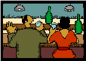

|

Page 72
The following is a case that can illustrate the value of arbitration in managing
workplace dispute. The case is an edited excerpt of an article written by
Mullen Taylor and published in 2000 at the website Mediate.com. The
complete account of the case, including the details of the arbitration process,
is available at http://www.mediate.com/articles/taylor.cfm
“Laura was hired as a copy editor for one of the many journals produced by the company. Seven other
employees worked on this team editing this Journal, including a senior editor named Tim. Laura had
worked there for about a month when she and her fellow co-workers went for happy-hour after work.
Everybody had a great time and had consumed a fair amount of alcohol. When everybody was leaving
the bar to head home, Tim, who had been secretly attracted to Laura since she started work at the
journal, hailed a cab and offered to share the ride with Laura. Laura accepted the offer. Once she was
inside the cab, Tim then suddenly made an aggressive sexual advance toward her. Horrified, Laura
pushed him away and told him to get out of the cab. Mortified, Tim slinked out of the cab.
The next day, Laura came to work with some apprehension. How would she deal with Tim? Would the
cab incident affect her job? Although Tim did not supervise her, would he try to get her fired? Tim
immediately went to her office and apologized for his extremely inappropriate behavior in the cab.
Relieved at his apology, Laura decided not to pursue the matter through any formal channels in the
office.
Everything would have been okay if Tim had stopped at just one sincerely expressed apology. However,
whenever he found himself alone with Laura, Tim apologized again, and again. He said he was sorry
about the incident at every opportunity he had for three months. This constant apology was awkward
and annoying to Laura. Ironically, by Tim apologizing continuously for his unwanted attention in the cab,
he was foisting another form of unwanted attention upon Laura. When he first started apologizing,
Laura told him that "it was okay". After three months of many apologies, she reached a point where she
asked him to stop apologizing, to no avail. Frustrated, she confided in a few co-workers about her
unusual dilemma. Consequently, these co-workers lost respect for Tim.
The ethical issues surrounding Tim and Laura's negotiation tactics are not clear cut. On the surface, we
may view Tim as well-meaning in his apologies yet socially inept in his ability to gauge when to stop
apologizing. Nevertheless, we can look upon Tim's apologies as intrusive, which cause his apologies to
lose their meaning of goodwill. It could be a form of wherein Laura cannot escape, for she is dependent
upon her job to support herself. Removing herself from the situation would cost Laura her income. Laura
did not possess the economic freedom to quit her job.
The first step toward finding a resolution of the conflict is to discover what Laura truly wants. She could
choose to pursue the matter through a rights-based mechanism to seek redress for sexual harassment. It
is unlikely that the rights-based approach of a lawsuit would serve any useful purpose. For one thing,
Tim's sexual advance in the cab may not fit the legal description of sexual harassment.
An interest-based approach is better suited to the conflict between Tim and Laura because focusing on
interests can help them better understand each other. [An] Ombudsman can help bring about greater
understanding through listening, facilitation of dialogue between Laura and Tim, problem-solving, and
|